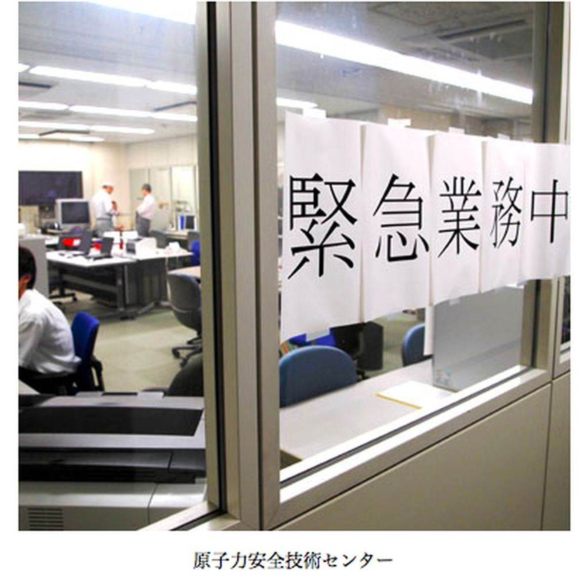

| プロメテウスの罠〔２〕 研究者は辞表を出して現場に飛び込んだ (朝日新聞デジタルＳＥＬＥＣＴ) | |
| 朝日新聞 | |
| (2013) | |
人類に火を与えたとされるギリシャ神話の神族の名を冠した朝日新聞の好評連載「プロメテウスの罠」。第２シリーズ「研究者の辞表」は、情報は誰のものかを考える。２０１１年１０月から本紙総合面で掲載した全２１回をＷＥＢ新書化。
内容紹介
人類に火を与えたとされるギリシャ神話の神族の名を冠した朝日新聞の好評連載「プロメテウスの罠」。第２シリーズ「研究者の辞表」は、情報は誰のものかを考える。２０１１年１０月から本紙総合面で掲載した全２１回をＷＥＢ新書化。
初出
朝日新聞 二〇一一年十月十七日～十一月六日
第１章 測定、まず僕が行く
第２章 家人には一切いわず
第３章 雨がっぱとゴム長
第４章 「これは棄民だ」
第５章 放射線量も赤裸々に
第６章 車から出てこいって
第７章 教えない、貸さない
第８章 「箝口令」と呼ぶ文書
第９章 暴力団からスカウト
第１０章 伝える、それが救う道
第１１章 ピンポイントの指示
第１２章 いきなり同心円避難
第１３章 送られなかった１６７枚
第１４章 二つの「やらねば」
第１５章 官邸独断、室内は騒然
第１６章 「目の前にいたんだ」
第１７章 来なかった官僚たち
第１８章 置き忘れたファイル
第１９章 「布団かぶれーっ」
第２０章 「世界で初めてです」
第２１章 いつの日か田植えを
２０１１年３月１１日午後。地震の瞬間を、木村真三（４４）は川崎市にある労働安全衛生総合研究所で迎えた。
研究所員の木村は、放射線衛生学の専門家。医師や看護師の被曝（ひばく）調査や、チェルノブイリ事故の現地調査に取り組んでいた。
大きな揺れの後、木村はテレビに駆け寄って「原発どうなった！」と叫んだ。大丈夫、とテレビは報じていた。千葉県市川市に住む家族とは翌日の午前２時まで連絡が取れなかった。
翌１２日は土曜日だった。家族と会うことができ、午後は３歳の長男と買い物に出かけた。家に戻ると、妻がいった。「原発が爆発した」。瞬間、木村は反応していた。スーツに着替え、長男に「お父さん、しばらく帰ってこないから」と告げた。
研究所に戻って現地入りの準備をした。住民を放射線から守るにはまず測定しなくてはならない。それには速さが求められる。時間がたてばたつほど測定不能となる放射性物質が増える。急ぐ必要があった。
準備を急ぎながら、木村は最も信頼する４人の研究者にメールを出した。京大の今中哲二、小出裕章、長崎大の高辻俊宏、広島大の遠藤暁。
「檄文（げきぶん）を出したんです」と木村は振り返る。
「いま調査をやらなくていつやるんだ。僕がまずサンプリングに行く。皆でそれを分析してくれ、と書きました」
えりすぐりの人たち、と木村はいう。
「全員、よし分かったといってくれました。一番返事が早かったのは小出さんです。私は現地に行けないけれども最大限の協力をします、と。あとの人たちからも次々と返事がきました」
木村はその檄文を七沢潔（５４）ら旧知のＮＨＫディレクター３人にも回した。測定したデータを公表する手段が要る、と考えていた。
じきに携帯電話が鳴った。七沢だった。七沢は七沢で知り合いの研究者と連絡を取りまくっていた。七沢はいった。「特別番組を考えている。協力してくれないか」
１１年３月１３日に市川で七沢と会った。打ち合わせを終えて七沢と別れたとき、携帯に研究所からの一斉メールが入った。研究所は厚生労働省所管の独立行政法人。文面にはこうあった。
〈放射線等の測定などできることもいくつかあるでしょうが、本省並びに研究所の指示に従ってください。くれぐれも勝手な行動はしないようお願いします〉
研究所に放射線の専門家は自分しかいない。これは自分に向けて出されたメールだ。木村はそう思った。自分の現地入りをとめるつもりだ、と理解した。
木村真三（４４）は、１９９９年に起きた茨城県東海村の臨界事故を思い出した。
当時、木村は千葉市にある放射線医学総合研究所に勤めていた。同僚とすぐ調査に行こうとしたが、許可が出ない。休日に有志で周辺を調査し、本格的な調査に向けて根回しを始めた。と、上司から「余計なことをするな」と大目玉を食らう。
「１１年３月１３日のメールを見て放医研のときと同じだなと思いました。同じことを繰り返したら死ぬまで、いや、棺おけに入っても後悔する」
出した結論は、労働安全衛生総合研究所を辞めることだった。
「家人には一切いわず、すぐ研究所に行って総務課長の机の上に辞表を置いてきました」
軽い決断ではなかった。任期５年の満期で放医研を辞めた後、木村は専業主夫を経て塗装工になった。雨の日以外は土日もなく働いた。ただ、ときどき休みをもらった。
「明日はつくばで論文書かないかんのよとか、京大で実験に入るからとか。研究者公募情報はずっとチェックしていました」
１年半後、公募情報で労働安全衛生総合研究所がアスベストの研究者を募集していると知る。「アスベストの中皮腫はプルトニウムによる症状とよく似てるんです。で、アスベストは知らんけど放射線は知ってると書いたら採用されました」
そのとき４０歳。正職員になったのは生まれて初めてだった。悪い職場ではなかった。「労働衛生と関係ないからチェルノブイリ調査事業は廃止を」と求められた際も泣く泣くのんだ。「事業は廃止になるが、自腹でも調査を続ける」と仲間にメールしたのは原発事故直前。研究者が職を得る苦労は身にしみていた。
それだけに、職を手放したことは妻に言えなかった。思い切って打ち明けたのは３月の終わり。妻の言葉は「あなたらしいわね」だった。
ＮＨＫ教育テレビのＥＴＶ特集ディレクター、大森淳郎（５３）は、原発事故の直後から関連番組づくりを考えていた。行き着いたのは、原発に詳しい七沢潔（５４）を呼ぶこと。七沢は現場を離れ、放送文化研究所の研究員を務めていた。３月１４日、プロデューサーの増田秀樹（４８）に相談すると、「すぐ呼ぼう」。
その日の夕方、七沢と木村が東京・渋谷のＮＨＫ６階に現れた。木村は測定器や防護用品をたくさん抱えてきて、「明日から行くんです」と主張した。
１１年３月１５日。木村真三（４４）とＮＨＫの七沢潔（５４）、大森淳郎（５３）は、ロケ用のワゴン車で福島に入った。
途中、ゴム引きの雨がっぱとゴム長靴を買い求めた。人がいる地域に防護服で乗り込むのは違和感がある、と考えた。
長靴をはき、その上からポリ袋をかぶせて雨がっぱとの間を粘着テープでしっかりとめた。木村の指導だった。マスクも活性炭入り、５層構造の品を木村が用意した。
放射線量を測り、検査用の土を採取しながら福島第一原発の方向を目指した。汚染はまだら模様だった。毎時３００マイクロシーベルトまで測定できる機器の表示が振り切れる場所もあった。原発に近い割には線量が低い場所もあった。
開いていた三春町の旅館に泊まりながら、とりあえず原発周辺を３日間走り回った。その後、ＥＴＶ特集プロデューサーの増田秀樹（４８）も加わって３月２９日まで断続的に現地調査を続けた。目的は放射能汚染地図を作り、番組にして流すことだった。４月３日の放映を目指した。
番組放映までの歩みは平坦（へいたん）ではなかった。３月２２日、局内の会議で企画そのものがボツになった。増田はあせった。４月３日のＥＴＶ特集に穴が開く。かといって震災と関係ない番組はやりたくない。七沢らと話し合い、三春町に住む作家、玄侑宗久（げんゆうそうきゅう）とノンフィクション作家、吉岡忍の対談を番組にして放映することを決める。それが３月２４日だった。
だが、放射能汚染地図を柱とした番組づくりもあきらめてはいなかった。３月２５日、増田が大森に連絡した。
「３０キロ圏内も入れるぞ」
ＮＨＫは３０キロ圏内入りを自主規制していた。入れるというのは勘違いで、のちに増田は始末書を取られることになる。大森は郡山で借りたレンタカーを運転して浪江町や葛尾村、南相馬市を駆けまわった。
大森は２０１０年夏、「敗戦とラジオ」という番組を作っていた。その中で感じたのは大本営発表の危険性だった。戦時中、なぜ報道機関は大本営発表しかできなかったのか。
大森は戦時中の「勝った」「勝った」という大本営発表が、今の政府の「大丈夫」「大丈夫」と重なってしようがなかった。大本営的発表があったとき、それを疑わないと意味はない。あとで振り返っても何にもならない。たとえ厳しい放射線値が出ても、本当の数値を報じることが重要ではないか。そんな思いに突き動かされていた。
１１年３月２７日。ＮＨＫの七沢潔（５４）と大森淳郎（５３）はレンタカーで浪江町の山間部を走っていた。
昼曽根トンネルを西に抜けた辺りで毎時２０マイクロシーベルトまで測定可能な表示が振り切れる場所があった。まさか人はいないよなあ、と２人で一軒の家を訪れると人がいた。
なぜまだここにいるのか。驚いた七沢が尋ねると、「町が何も言ってこないから」。
元板前の天野正勝（７０）。２０キロ圏外なので、ここは安全だと信じていた。心臓に不安を抱え、避難所には行けないとも思っていた。
妻と犬と一緒だった。電話が通じないため、誰とも連絡が取れない。携帯が通じる場所まで行ったら親戚に電話してくれ、と頼まれた。
天野は「近くの赤宇木（あこうぎ）集会所に１０人くらいが避難している」と教えてくれた。すでに夕暮れだった。
集会所を訪れると、１２人の避難民が暮らしていた。警戒された。「ほんとにＮＨＫ？ 私たちを追い出しに来たんじゃないの、と」（七沢）。七沢と大森が持つ線量計の積算値はぐんぐん上がっていた。ここは放射線量が高いです、と言っても１２人には信用されなかった。
それぞれ事情を抱えていた。ペットがいるため避難所に行けない人がいた。隣の体育館には夫婦がいて、段ボールで囲った空間で暮らしていた。妻は足が悪くてポータブルトイレしか使えない、だから皆と一緒には暮らせなかった。夫は心臓の薬が切れたといっていた。
大森がぽつりといった。「これは棄民だ」。行き場のない１２人。正規の避難所ではないため、食料も自分たちで調達していた。
夜。別行動をしていた木村真三（４４）に集会所のことを伝えた。木村は言った。
「調査は一時中止しましょう。僕が避難を説得します。説得しないと僕の仕事はない」
翌２８日。赤宇木集会所前の駐車場で放射線量を測ると、毎時８０マイクロシーベルトあった。木村は驚いた。この数値は人が住めるレベルではない。集会所の中に入り、マスクを外して危険を説明した。所内の線量も毎時２５～３０マイクロシーベルトあった。
「線量計の数値を見せ、初めて皆が納得したんです。それまでにも警察や役場が『危ない』と言ってきたが、数値を示したことはなかった。数値を見せたから納得したし、僕が専門家だったことも大きかった」
木村真三（４４）と調査を続けながら、ＮＨＫの七沢潔（５４）と大森淳郎（５３）、増田秀樹（４８）は１１年４月３日の番組づくりを急いでいた。
もともと汚染地図の作製を番組にする計画だったが、３月２２日の会議で企画自体がボツになっていた。急きょ考えたのが、福島県在住の作家、玄侑宗久とノンフィクション作家、吉岡忍の対談。対談の合間に、赤宇木（あこうぎ）集会所に避難している１２人の情景を入れることにした。
赤宇木の放射線量が異常に高いこと、そこに１２人が避難していることは３月２７日に七沢と大森が見つけ、２８日に木村が避難を呼びかけていた。１２人は３０日に避難するのだが、その前日、２９日に吉岡を集会所に連れて行き、３０日の避難もカメラに収めた。
それから編集。普通１カ月かかるのを３日で仕上げた。若い局員も手伝い、５人で寝ずにやった。「でき上がったのはオンエアの３０分前でした」と増田はいう。
赤宇木のシーンは視聴者に大きな感銘を与えた。
「ＮＨＫ内部で取材規制の内規を見直す契機にもなりました。３０キロ圏や２０キロ圏の中に入って取材するべきじゃないか、と。１週間後の４月１２日、内規は変更になりました」
４月３日の番組が成功したのを背景に、増田らは当初の目的だった番組を実現させる。ＥＴＶ特集「ネットワークでつくる放射能汚染地図」。放映は５月１５日深夜。こちらの反響はさらに大きかった。
「視聴者から電話が１千件きました。実態が分かった、こういう調査報道こそやってほしい、なぜ深夜にやるんだ、などでしたね」
発表に頼らず、独自に調査したことが大きかったと増田は振り返る。
「赤裸々というか、番組では放射線の数字も含めて出しています。政府はパニックを心配していたようですが、実際は逆でしたね。自分たちがどんな状況にあるのか知りたい、という意見が多かった」
七沢はいう。
「こんな所までよく来てくれた、と取材中も喜ばれるし、放送した後にありがとうって言われるんです。見た人からありがとうと言われる番組なんて、やったことがない」
たとえ厳しい数字が出ても、本当のデータを知りたい。増田にはそんな声が届いたという。住民は情報に飢えていたことになる。
情報はなぜ末端に届かないのか。赤宇木のお隣、飯舘村長泥（ながどろ）ではこんなことがあった。
原発事故後、浪江町山間部に隣接する飯舘村には南相馬市からの避難民が集まっていた。
避難してきた人たちに食料が要る。飯舘は村ぐるみ救援に動いた。同村長泥（ながどろ）の地区長を務める鴫原（しぎはら）良友（６０）も、地区の家々に米１升ずつの供出を頼んで回った。
集まった米を炊き、長泥の人たちは握り飯を握って避難した人たちに届けた。１１年３月１５日が６００個、１６日と１７日は３００個。
「放射能？ そんな意識は全然なかった。原発の交付金も来なかったが、放射能も来ない、そんなふうに信じ切っていたな」
村の南端にある長泥は、高原地帯に約７０軒が点在している。原発からは３３キロも離れていて放射能とは縁遠いはずだった。ところが......。
長泥の南東は浪江町赤宇木（あこうぎ）で、その隣が昼曽根。福島第一原発から見ると北西に昼曽根、赤宇木、長泥と続く。飛散した放射性物質は、それら北西方向の集落に落ちていった。
「見てみな、３月１７日のデータ。毎時９５マイクロシーベルトあったんだ。あんとき、おら握ってたんだよ、おにぎり」
９５という値が出ていることも、数字が持つ意味も長泥の人々には知らされていなかった。そればかりではない。鴫原の脳裏には腹立たしい記憶が刻まれている。
３月２０日の数日前と記憶している。地区中心部に白いワゴン車が止まっているのに気がついた。
「２時間くらいいたんだ、最初。車止めてな。車から棒出してんだ。白い防護服着て。ガスマスクして」
車から出ることもあったが、すぐまた車に入ってしまう。
「ちょっと出てきて話しろっていったんだ。おらはこのまんまだから。マスクもしねえで」
３０キロ圏の外は全く安全なはずだった。そこにガスマスク防護服男が現れ、車から出ずに棒を出して測定する。異様な光景といっていい。
「どうなんだっていっても答えない。線量の数値も教えない。どうなんだっていったらたばこ吸ってんだよ。ふざけんなこのやろうって思って追及したんだよ。文部科学省の職員なのかって聞いたら違うと。なんでこんな車さ。文科省の職員じゃないのかといったら違うと」
やがて押し問答に。
「わあわあといってるうちに、今度は下請けなんだと。下請けの下請けなんだと。上さ聞かないとだめだと」
飯舘村長泥（ながどろ）の区長、鴫原（しぎはら）良友（６０）は福島市で避難生活を送っている。彼の記憶をさらにたぐる。
１１年３月２０日の数日前、長泥。白ワゴン車に乗る防護服男とのやり取り。
「車の中の男たちはみんな線量計を二つずつ持ってんだからあ、一つだけ貸さないかといったんだ。あの人たち、積算のやつと二つ持ってんだからな」
「線量計を見ないのかっていったら見ないんだっていうんだけど、貸さないんだよ。長泥地区にひとつ貸してくれ、おらが見て、みんなにこうだというからと」
「分かった。貸さねえんなら今度は掲示板書けといったんだ。それでもすぐには書いてくれなくてな。書いてもらうまでに１週間くらいかかった」
鴫原の要求で、やがて地区の掲示板に数値が載り始めた。さかのぼって載せたのだろう。３月１７日が毎時９５・１マイクロシーベルトで、１８日が５２、１９日５９・２、２０日６０、２１日４５、２２日４０、２３日３５、２４日３０、２５日２７......。
放射線量の低下に従い、男たちの格好は変化した。ガスマスクに防護服姿が、やがて普通のマスクに変わった。防護服もいつの間にか普通の作業服に替わっていた。

住民が普通に住む場所に防護服姿で乗り込み、測定値を聞かれても教えない。測定するから線量計を貸してくれ、と求められても貸さない。
傍ら、政府は安全といい続けた。
３月１８日午前。官房長官、枝野幸男の記者会見。
「周辺の数値でございますが、部分的に大きな数字が出ているところはありますが、全体としては人体に影響を与える恐れのある大きな数値は示されておりません。若干高い数値が出ているポイントがございますが、ここについても、直ちに人体に影響を与える数値ではないと」
３月２３日午後にはこう言った。
「３０キロ圏外の一部においても、年間１００ミリシーベルト以上の被曝（ひばく）線量となり得るケースも見られますが、現時点で直ちに避難や屋内退避をしなければならない状況だとは分析をいたしておりません」
住民は安全と信じて住み続けるほかなかった。鴫原はいう。
「防護服の男たちが来たとき、子どももいたよ。俺の孫もいたもんな。まあ、１０人か２０人いた」
防護服男は「文部科学省の下請け」的ないい方をした。彼らはなぜこれほど秘密主義だったのか。
一枚の文書がある。
旧日本原子力研究所（現日本原子力研究開発機構）が１９９９年１０月に出した。放射能の影響予測や放射線量のデータを公表する際のルールを記した一枚紙だ。
外部からデータの提供依頼があれば、依頼された者はデータ管理者にお伺いをたてる。管理者は部長に聞き、部長は所長に聞き、所長は副理事長に聞く。
副理事長がＯＫを出すと、逆の順番でＯＫが伝達され、安全管理室を通じて外部に提供される。注釈が付いていて、「学問的に十分な質であることを確認」とある。
要するに、相当に面倒な手続きを踏まなければ外部にデータを出せないことになっている。
「われわれはこの文書を『箝口令（かんこうれい）』と呼んだんですよ」
同機構労組の委員長を長く務める岩井孝（５４）が説明する。同労組の略称は原研労組。機構には旧動燃系の原子力研究開発労組もある。
「自分たちが知った情報は、たとえ住民のためになることでも職務上の秘密だ、出すなということです」
文書が出たのは同年９月３０日の東海村臨界事故直後。つまり、臨界事故に伴う各種データを流出させないためにこの文書が作られた構図になる。だから「箝口令」。
「あのとき、われわれの仲間が測りに行ったんですけど、なかなか国がそのデータを出さなかった。住民被曝（ひばく）の懸念を示すデータもあったのに、出さない」
個人で出せば処分が待っている。ならば組合でまとまってやればいいのではないか。そう考え、組合として住民に知らせるべき情報を出したりしたという。
同じようなことが、１２年後の今も繰り返されている。
「原子力機構にはモニタリングや環境測定を仕事にしている人たちがいます。その人たちが動けない。だめだ、放射線量を測ってもデータを出せないんだという。なぜ出せないんだと聞くと、国が情報を管理するから機構として測っても発表できない、と上司にいわれたと」
データなんだから出さないのが間違っている、と岩井は憤る。
「出すべきものを出さない、だから国のいうことは信用されない」
「放射線量を書いたメモも廃棄しなくちゃだめだといわれているんです。外に流れたら困るからと」
一枚紙の時代とそう変わってないな、と岩井は思う。
現在、放射線量を測るモニタリングの定点は文部科学省が決め、日本原子力研究開発機構の研究者らが計測に当たっている。

「研究者が単なる作業員になってるんですよね」。日本原子力研究開発機構労組（原研労組）の委員長、岩井孝（５４）がいう。
「定点で測るのもそれはそれで意味はありますが、それ以外に、線量の高い場所などを探して歩くことが絶対に必要なんです。そういう意味では研究者は歯がゆい思いをしていると思います」
その歯がゆさを、辞職という手段で飛び越えたのが木村真三（４４）だった。勤めていた労働安全衛生総合研究所に辞表を出し、縦横に動いて放射線を測定した。時には住民にデータを示して危険を説明した。

やっと得た職を辞してまで現場に行く。木村が思い切った行動を取った背景には、おそらく木村の反骨心と独特の経歴が影響している。
木村は愛媛県西南部、四万十川の支流に広がる広見町（現鬼北町）で生まれた。父は傷痍（しょうい）軍人の町職員で、厳格だった。母は保育園長。小学校から高校まで地元で過ごす。
実は相当な不良だった。
「小学３、４年のとき、いじめられている女の子をかばったら今度は僕が徹底的にいじめられたんです。中学に入ったときに思いました。こいつらよりもっとワルになったらこいつらをたたきつぶせる」
授業に出ず、体育館の屋根裏でたばこを吸った。けんかもした。北宇和高校に進んでも同じだった。けんかに勝つため体を鍛えに鍛えた。１７７センチの身長にがっしり筋肉がついた。一時はプロレス入りも考えた。
卒業間際には暴力団にスカウトされた。
「お前やったら頭も切れるけん、うちに来い。舎弟分の事務所が松山にあるから、そこで１カ月修業して、それからうちに来い、と。就職の誘いは暴力団だけでした」
父親は「お国のために死んでこい」といった。自衛隊に入れ、という命令だった。そのとき、木村は人生でし忘れていることはないかと考えた。そういえば勉強をやったことがなかった。大学に行きたいな。
もともと天文学者になる夢を持っていて、ぐれてからも天体観測を続けていた。物理学を学びたい、と思っていた。父親は「お前みたいなやつに勉強する資格はない」と怒ったが、母親が「私がお金を出します」といってくれた。
異色の研究者、木村真三（４４）の過去を続ける。
大学行きは決めたが、学力はない。愛媛の山あいから出た先は高知市だった。市郊外にある予備校の寮に入り、自転車で予備校に通った。
「一念発起して勉強しました。英語の偏差値は２９から６０まで上がりました。長文解釈が得意でした」
友人が「山口県に東京理科大の短大ができる。そこなら理科大に進める」と教えてくれた。助言に従ったものの、当初は素行不良だった。
「１年の夏休み明けに面接があって、進学したいって言うと、行けるところはないと言われたんです。そこでまた一念発起して。助教授に『生活改め表』を書けと言われて書いて、必死に勉強した。自分より成績の低い仲間が東京理科大への編入を決めていくのに反発し、国立に行く、九州工大を受ける、と」
推薦をくれた教授が「お前は二部（夜間）で働く人の大変さを味わってこい」といった。合格し、九州工大の二部に３年から編入する。働きながら熱心に学ぶ人たちの姿は目からうろこの驚きだった。
「これはほんとに勉強せんといけんなあと思いました」
専攻は金属材料で、物理と化学の両方を学んだ。学内で技術補佐員の仕事を見つけ、昼は分子構造の解析プログラムをつくったりした。
卒業が迫り、工業高校の教師を目指すか大学院への進学を考えていた。と、推薦状をくれた山口の教授から電話が入る。「お前、来週からうちの大学の助手だから。もう教授会で決まった」
いや応なく山口に戻り、助手を務めた。１年後、大学院への思いが募り、石川県の北陸先端科学技術大学院大に。体内の薬物伝達を研究し、２年で修士課程を修了。博士課程は北海道大に進み、パーキンソン病のメカニズム研究で博士号を取る。
妻の実家が会津の出ということもあり、木村は１１年３月から福島に半ば入りっぱなしで内部被曝（ひばく）調査や汚染地図づくりに取り組んでいる。
木村の信念は「研究成果は住民のもの」だ。仮に深刻な値であっても住民に知らせ、意味を説明することが人々を救う道だと信じている。
だが、木村の考え方は多数派ではない。たとえば３月１８日、日本気象学会は会員に研究成果の公表自粛を呼びかけた。「防災対策の基本は、信頼できる単一の情報に基づいて行動すること」が自粛の理由だった。
放射線衛生学の研究者、木村真三（４４）らが福島に入った１１年３月１５日は、朝６時すぎに福島第一原発の２号機が破損、大量の放射性物質が放出されていた。
原発から５キロの場所には１１日夜に国の現地対策本部ができていた。しかし１４日夜には２号機の状態を懸念して撤退方針を決める。同日夜から撤退を始め、１５日午後には原発から６０キロ離れた福島県庁に退いた。
撤退組の一人、渡辺眞樹男（５７）は福島県庁に移った後の１５日夜に指示を受けた。「大変な事態になっている。測定に行ってくれ」
渡辺は文部科学省茨城原子力安全管理事務所から応援に来ていた。指示された場所は浪江町山間部の３カ所。ピンポイントだった。神奈川北原子力事務所の車で現地に行き、午後９時ごろ放射線量を測る。数値を見て驚いた。３カ所とも高く、特に赤宇木（あこうぎ）は毎時３３０マイクロシーベルト。
「いやもう、信じられなかった」と渡辺は振り返る。すぐ報告しようとしたが、携帯はつながらない。雨模様だったので衛星携帯も使えなかった。急いで川俣町の山木屋まで戻り、公衆電話から報告をした。戻る途中、点々と人家の明かりが見えた。まだ大勢の人が残っていた。
「とにかく住民の方々に被曝（ひばく）をしてほしくなかった。線量が高いと報告し、早くこの線量を発表してください、とお願いをしました」
実はこのとき渡辺は防護服を着ていなかった。県庁への撤退が慌ただしかったため、防護服の類は現地本部に放棄していたからだ。
「不思議と自分のことは考えていないですよね。こんな時だからこそやらなきゃいけない、と」
必死の思いで渡辺が伝えた数値は、しかし住民避難に使われはしなかった。文科省は３月１６日にその数値を発表したが、地区名は伏せたまま。浪江町に知らせることもなかった。町は危険を認識せず、一帯に残る住民に伝えることもなかった。なにより官房長官は「直ちに人体に影響を与えるような数値ではない」と会見で述べていた。
それにしても、なぜ対策本部は高線量の場所をピンポイントで知っていたのか。渡辺は言う。「ポイントをどなたが決めて指示されたのか、私もいまだに分かりません」
元をたどると、指示は文科の本省だった。根拠に使われたのはＳＰＥＥＤＩ（緊急時迅速放射能影響予測システム）。同省は汚染の概要をつかんでいた。
１１年３月１５日、毎時３３０マイクロシーベルトの値が出る場所を、なぜピンポイントで指示できたのか。
東京・霞が関の文部科学省。時に身ぶり手ぶりを交えながら、科学技術・学術政策局次長の渡辺格（いたる）（５３）が説明する。
「実は、単位放出のＳＰＥＥＤＩを使いました」
ＳＰＥＥＤＩ（スピーディ）とは放射能の影響を予測するシステムのことだ。放出された放射性物質がどう広がるのか。風向きや風速、地形を計算し、飛ぶ範囲を予測する。
放射性物質は同心円状には広がらず、汚染エリアは複数の突起を形成する。そのエリアをＳＰＥＥＤＩで予測し、迅速に住民を避難させなければならない。それが原子力防災の基本中の基本とされている。
予測の基になるのは、原発からの放出源情報だ。ところが今回の事故ではそれが入手できなかった。
しかし、そういう事態でも仮の値を入力することで予測ができる。それが、１時間に１ベクレル放出したと仮定する「単位放出」で計算するやり方。渡辺はその手法で正確に高汚染地域を把握していた。
渡辺が特殊な手法を用いたわけではない。原子力安全委員会が定めた指針では、事故発生直後は放出量を正確に把握することが難しいため、単位放出または事前に設定した値で計算するとある。そうして計算した予測図形をもとに、監視を強化する方位や場所を割り出していく。
「単位放出で情報を流す、という点ではマニュアル通りでした。放出量が分からないときに単位放出を各関係者に配るというのがマニュアルになっていましたから」
マニュアルによると、配る先は一部の省庁と原子力安全委員会、福島県、そして現地対策本部。
「実際に避難範囲を決める場合、ＳＰＥＥＤＩを使ったのかどうかは文科省では分かりません。避難範囲を決めたのは文科省ではなく原子力災害対策本部ですから。今回は本来の使い方はされず、いきなり同心円状で避難の指示がなされた」
マニュアルでは文科省は情報を出すだけで、それを使って避難指示を出すのは原子力災害対策本部、つまり官邸だ。しかし首相の菅直人も、経済産業大臣の海江田万里も、官房長官の枝野幸男もＳＰＥＥＤＩを知らなかったと主張する。特に海江田と枝野は３月２０日過ぎまで知らなかったと国会答弁している。いったいどうなっていたのか。
ＳＰＥＥＤＩの予測データはどう流れたのだろうか。
震災から約４時間後の１１年３月１１日午後７時３分、国は原子力緊急事態宣言を出す。首相官邸に原子力災害対策本部ができた。
経済産業省の原子力安全・保安院は、対策本部の事務局を担う一方、同省別館３階に緊急時対応センター（ＥＲＣ）を立ち上げた。他省庁からも人がかき集められた。
ＳＰＥＥＤＩの予測は本来、文部科学省が原子力安全技術センターを使って１時間ごとに行う。できた予測図は保安院にも送られるが、保安院は独自の予測も出そうとした。それに向け、同日夜には同センターのオペレーターをＥＲＣに入れた。

保安院が独自で行った１回目のＳＰＥＥＤＩ予測は午後９時１２分に出た。翌１２日午前３時半に福島第一原発２号機でベント（排気）をした場合、放射性物質はどう拡散するかという予測だ。放射性物質は南東の太平洋へ飛ぶ結果が出た。
３月１２日午前１時１２分に２回目の予測。今度は同時刻に１号機のベントを仮定した。これも海へ拡散していた。保安院は１６日までに４５回１７３枚の独自予測をはじきだした。
保安院の予測の特徴は、さまざまな情報を集めて放射性物質の放出量を推測したことだ。放出量を１ベクレルと仮定した文部科学省に比べ、予測の精度は高かった。
官邸の地下には、各省実動部隊が詰めるオペレーションルームがある。保安院は課長補佐以下の職員数人をそこに出していた。保安院から予測図を受け取る専用端末も備えられていた。
官邸５階には首相の菅直人ら災害対策本部の中枢が陣取っている。避難区域を決めたのはこの中枢であり、その決定にはＳＰＥＥＤＩの情報を参考にすることになっている。ということは、予測図は専用端末を経て５階まで運ばれていなければならなかった。しかし......。
オペレーションルームの専用端末に送られたのは１、２回目の予測図だけ。保安院が独自で行ったＳＰＥＥＤＩ予測のうち、４３回１６７枚はＥＲＣ内で止まっていた。
しかもプリントアウトして内閣官房の職員に渡したのは２回目の分だけだった。２回目の予測図はＡ４判で計３枚だが、そのうち何枚を渡したか、渡したあとどうなったかも保安院は確認を取っていない。
なぜこんなことになったのか。
商業用原子炉の規制、監督をつかさどるのは原子力安全・保安院だ。今回の事故でも、保安院の動きは最大の焦点だった。
事故当時を知る幹部や現場職員に話を聴きたいと何度も依頼した。
もちろん保安院には出向いて話を聞いた。関係者の自宅にも何度か手紙を出し、ときには玄関まで足を運んだ。保安院の広報は「職員個人への取材はご遠慮いただきたい」といったが、当事者から聞かねば分からないこともある。保安院は「担当課から答えさせる」と強調しながら、その答えは常に要領を得なかった。
保安院はすでに民間人となった幹部ＯＢへの取材も規制した。「事故当時のことはすべて担当課が答える」という理屈だった。
そんな中、事実の断片を積み上げながらＳＰＥＥＤＩをめぐる経緯を知ろうとした。匿名を条件に明かしてもらったこともある。
以下、いまの時点で最も事実に近いと思われる経過はこうだ。
１１年３月１１日午後７時過ぎ。官邸に原子力災害対策本部ができたとき、原発から５キロの場所に現地対策本部がつくられた。原子力防災マニュアルでは現地本部が対策の中心だ。ＳＰＥＥＤＩを使って住民の避難区域案をつくるのもここの役割だった。
しかし現地本部は地震の揺れで通信回線が途絶していた。要員の集まりも悪い。とうてい避難区域を検討できる状態ではなかった。
現地本部が機能しない場合、避難区域を考えるのはどこか。意図しないまま、保安院と官邸で重大な勘違いが生じていた。
東京・霞が関。経済産業省別館３階にある保安院の緊急時対応センター（ＥＲＣ）は、避難区域の案をつくるのは自分たちしかいないと確信していた。官邸に置かれた対策本部の事務局は保安院であり、その中核がＥＲＣだからだ。
放射線班が避難区域案づくりを担当し、原子力安全技術センターに注文してＳＰＥＥＤＩの予測図をはじきだそうとした。住民の避難には放射性物質の拡散予測が欠かせない。班員らは必死だった。
一方、官邸５階に陣取る対策本部の中枢は違う考えを持っていた。現地が機能しなくなった以上、自分たちが避難区域を決めるほかない。官邸中枢はＥＲＣの存在を認識できないほどあせり、混乱していた。
時刻は３月１１日の夜９時前後。ＥＲＣと官邸で、別々に避難案づくりが進んでいた。
事実に近いと思われることをさらに続ける。
１１年３月１１日午後９時１２分。経済産業省別館にある原子力安全・保安院のＥＲＣ（緊急時対応センター）は、独自に注文した１回目のＳＰＥＥＤＩ予測図を受け取った。
ＳＰＥＥＤＩは放射性物質の拡散を最大７９時間先まで予測できる。その能力をフルに使って将来の拡散範囲を予想し、危険地域にいる住民を避難させなければならない。
放出された放射性物質は風に流されるため同心円状には広がらないのが常識だ。何時間後、どこに汚染が広がるか。ＥＲＣはＳＰＥＥＤＩの予測を続けて汚染区域を見極めようとした。ところが......。
その矢先の午後９時２３分。原子力災害対策本部長の菅直人は同心円状の避難指示を発する。原発から３キロ圏内の住民には避難、１０キロ圏内の住民に屋内退避、という内容だった。
対策本部の事務局は保安院が担当し、その中核はＥＲＣだ。そこには全く連絡がないまま、いきなり結論だけが下りてきた。官邸中枢が独自の判断で決めたのだ。
避難区域の案をつくっている最中に、いったいどうしたことか。ＥＲＣは驚き、室内は騒然とした。
官邸中枢が避難区域を決めてしまった以上、自分たちの役割はない。そう即断し、この段階でＥＲＣは避難区域案づくりをやめてしまう。
官邸中枢が発した避難指示は３月１２日午前５時４４分に原発から１０キロ、同日午後６時２５分に２０キロと広がっていった。いずれも同心円状だった。
ＥＲＣは３月１６日までに４５回もＳＰＥＥＤＩの計算を繰り返すが、それは避難区域を決めるためではなく、官邸中枢が決めた避難区域について検証するためだった。
同心円状に広がらないのは原子力防災の常識なのに、同心円状に避難指示が出る。そのおかしさを感じながらＥＲＣはそれを追認した。発せられた避難指示を否定する根拠がない以上、追認が妥当と考えた。
その後、政府はこう強調した。放出された放射能量が不明だったのでＳＰＥＥＤＩ予測はそもそも役に立たなかったのだ、と。ＥＲＣがＳＰＥＥＤＩを使って避難区域案をつくろうとしていたことは伏せられた。
同心円状の避難指示で最も矛盾が生じたのは、２０キロ圏外にある放射線量の高い地域だった。ＳＰＥＥＤＩの予測図では、２０キロ圏をはるかに越え、北西方向に高線量地域が延びていた。
「俺の目の前に保安院のトップがいたんだよ」
１１年１０月３１日夕、東京・永田町の議員会館。原発事故当時の首相、菅直人（６５）は強調した。
菅が憤るのは３月１１日夜に官邸中枢が避難区域を決めた際、原子力安全・保安院のＥＲＣ（緊急時対応センター）が「いきなり結論が下りてきた」と受け取ったこと。それはおかしい、官邸中枢に保安院長がいるんだからＥＲＣが知らなかったことにはならない、と菅はいうのだ。
浮き彫りになるのは対策本部長の菅と対策本部の事務局長を務める保安院長、寺坂信昭（５８）の間で重要な会話が成立していなかったことだ。ＥＲＣが避難区域を決めようとしていたのも知らなかった、寺坂は自分にＳＰＥＥＤＩのことも言わなかった、と菅は明かす。
寺坂は私たちの取材に応じていない。保安院は、すでにＯＢとなっているにもかかわらず、寺坂への取材を強く規制している。
当時、菅の前には原子力安全委員会の委員長、班目（まだらめ）春樹（６３）もいた。
３月１１日の午後６時以降、内閣府にある安全委員会事務局のＳＰＥＥＤＩ端末に文部科学省が１時間ごとに出す予測図が次々と届き始めていた。事務局は同じ予測図が文科省から官邸に送られていると思っていた。それゆえ班目に届ける手だてを取らなかったのだが、実際は文科省から官邸に届くルートはなかった。
結局、文科省は予測を発するだけで終わり、安全委員会も官邸に予測を届けず、保安院が官邸中枢に届けた予測図は０～３枚。保安院はＳＰＥＥＤＩで避難区域案を作ろうとしたものの、それも実らなかった。
ＳＰＥＥＤＩは避難区域づくりにも使われず、公開もされず、官邸中枢は３月２０日前後まで存在すら知らなかったと主張している。
これにより、最も影響を受けたのは浪江町山間部から飯舘村長泥（ながどろ）周辺にかけての高線量地域にいた人たちだ。最も放射線値が高いとき、長泥地区は懸命に炊き出しをしていた。自分たちのためではない。南相馬市からの避難民を助けるためだ。
浪江町の津島にも大勢が避難していた。避難者が多すぎて炊き出しのお握りは小さくなったが、みんな１日それ１個で我慢した。役場の職員の多くはそれさえ食べなかった。消防団は地面に穴を掘ってトイレをつくった。津波の修羅場を越え、放射能から逃げ、それでも人々は整然と動いていた。
ＳＰＥＥＤＩ以外にも謎はある。
福島第一原発の近くに現地対策本部が設置されて５時間後の１１年３月１２日午前０時ごろ、本部長を務める経済産業副大臣、池田元久（７０）は自衛隊のヘリコプターで現地に入った。
現地本部のメンバーは事前に決まっている。たとえば茨城県ひたちなか市にある原子力緊急時支援・研修センターの７人は、３月１２日午前１時半に現地本部を目指した。センター長の片桐裕実（５９）が振り返る。
「ところが国道６号が大渋滞で。本来は１時間の距離なんですが、２時間かかって自衛隊の百里基地に着き、４時半ごろヘリに乗りました」
ヘリは山上の駐屯地に着陸し、自衛隊の車で現地本部へ向かった。
「まだ雪があったので、機材を運ぶのがしんどかったのを記憶しています。現地対策本部に着いたのは午前６時から６時半ごろでした」
現地本部の通信はほぼ全滅していた。使えたのは二つの衛星電話だけで、１本は東京の原子力安全・保安院とつなぎっぱなしになっていた。
片桐がまずやったのは放射線値を測るモニタリングだった。測定すべき高汚染地域を探すにはＳＰＥＥＤＩの予測図が欠かせなかったが、回線の途絶でデータは入らない。やむを得ず隣の建物にあった風向風速計で放射能の行方を推測した。
食べ物はほとんどなく、寝る場所もなかった。多くの者は机の上に突っ伏して寝た。疲労が蓄積した。
片桐らが踏ん張る一方、来るべき省庁関係者が大量に来なかった。
現地本部には１３省庁から４５人が集まるはずだった。保安院の審議官を事務局長に、次長が内閣参事官ら４人。残り４０人が総括、放射線、住民安全など７班に分かれて各班のメンバーを指導する。これが現地本部の中核といえる。参集には国が交通手段を用意することにもなっていた。
だが、集合したのはわずか５省庁２６人。なぜこれほど集まりが悪かったのか。保安院の原子力防災課長、松岡建志（４５）は「災害対応が忙しかったと聞いている」と話す。
地震や津波への対応で忙しく、原発事故の現地本部には行けなかったという説明だ。以下、課長補佐の中島義人（３９）との会話。
――こっちが忙しいから現地本部に行けないというのはおかしい。
「実態としてはそういう状況だったと聞いている」
――怖くて行かなかったのでは？
「さあ。それは直接聞いてもらわないと......」
１１年３月１２日早朝、原発から５キロに位置する現地対策本部に入った片桐裕実（５９）らは、福島県庁のワゴン車を借りて周辺の放射線値を測定した。
３月１２日午後には１号機の水素爆発に遭遇した。片桐がいう。「測定に出ていた人間は原発に比較的近いところにいて、すぐ戻ってきて。すごい爆発があったと報告を受けました」
３月１４日午前、３号機の爆発音は現地本部にも響いてきた。「これは音が聞こえました。白煙が出て、けっこうびっくりする音でした」
測定に出た者は放射能の恐怖に耐えながら放射線値のデータを取っていた。ＳＰＥＥＤＩは予測値だが、これは実測値だ。なにより住民の避難に使う必要があった。放射線量が高くなっている地域を見つけ、そこにいる住民を一刻も早く避難させなければならない。
しかし現地本部は孤立状態にあった。貴重なデータを取ったものの、それを東京の対策本部に送る手だてはない。「やはり通信手段がなかったのが致命的でした」
さらにもう一つ、片桐にとって残念なことがある。
「こういったデータが公表されたのは６月なんですね。３月１２日、１３日あたりのデータが移転先の県庁にうまく引き継がれなかった」
現地本部は３月１５日に福島県庁まで撤退する。その際、データを入れたファイルを現地に置き忘れていた。回収したのは５月２８日になってから。事故直後の放射線値のほとんどは、６月３日まで表には出なかった。
表に出たデータも、極めて分かりにくかった。
３月１５日夜、文部科学省茨城原子力安全管理事務所の渡辺眞樹男（５７）が測定した浪江町赤宇木（あこうぎ）の毎時３３０マイクロシーベルトは、翌日同省のホームページ（ＨＰ）に載せられた。
ところが肝心の測定地点は、ほとんど地名のない地図上に○で囲んだだけ。町の関係者ですらその地点を認識できなかった。これでは分からないという指摘は多かったが、改善はしなかった。同省科学技術・学術政策局次長の渡辺格（いたる）（５３）は、「電話での問い合わせもあり、そのときはお教えするようにした」。
発表方法がＨＰだけというのも批判の的になった。浪江町は住民とともに役場も転々と避難を続けていた。インターネットに載せても見ることができない。
まるで情報が出し渋られるかのように、大事なデータは末端まで届かなかった。
ＳＰＥＥＤＩの存在を認識したあとも、官邸は予測図を公開しなかった。それに関連し、首相補佐官の細野豪志（４０）は、１１年５月２日の記者会見で「国民がパニックになることを懸念した」と説明した。
住民に情報が届きにくかった背景には、おそらくそんな国の思想がある。だが実際には政府自身がパニックに近いような混乱ぶりだった。
避難区域の決定をめぐる原子力安全・保安院と官邸との食い違いもそうだし、現地本部撤退時に起きたデータの置き忘れもそう。そのとき、保安院の検査官全員が一時的に原発から退く事態も起こっていた。
検査官は原発内でその状態を監視する唯一の国の人間。福島第一には５人いて、常に１人は原発に詰めている。ところが現地本部が福島県庁に撤退した３月１５日昼、５人全員が県庁に退いた。東京電力が原発から全員を撤退させたいと言った言わないの話が出るのもそのころだ。
現地本部の撤退作業も余裕はなかった。保安院の原子力防災課長、松岡建志（４５）は「２０キロ圏に住民が残っていないのを確認して撤退した」と強調する。が、住民はいた。
浪江町役場から４キロ、原発からは１０キロ北西に住む原二郎（７５）と妻の良子（７６）は、３月１７日の午後に偶然訪れた２台のパトカーに救出された。
夫妻はガソリンがないために避難できなかった。草刈り機のガソリンを抜いてみたが、１リットルしかない。仕方なく、自炊しながら家にとどまった。停電だったが、プロパンガスは使えた。水は井戸からくんだ。家の電話も携帯電話も通じなかった。
３月１４日午後２時半には落雷のような破裂音を聞いた。原は「原発爆発したぞ、布団かぶれーっ」と良子にいった。１時間、２人で布団をかぶっていた。布団の中から外を見ると、原発の方向に火花がピカピカ見えた。それが５分間続いた。３号機の爆発は午前１１時だが、「自分が見たのは午後２時半だった」という。
救出してくれた警官は防護服にガスマスク姿の４人組だった。「何やってんだ！」と怒鳴られたので「申し訳ないことで」と謝った。「理屈はいいから早く乗れ！」といわれ、１人ずつ別のパトカーに乗った。
避難した翌日、別の町民も助け出されてきた。良子はいう。
「どもこもなんないんだわ、ガソリンないんだから。近所も誰もいないし。軽トラックで行ける所まで行こうとして、おにぎり握ってたらパトカーがきた」
辞表を出して現場に飛び込んだ研究者、木村真三（４４）は、いま市民科学者の育成に力を注いでいる。
お上（かみ）からの情報だけでなく、自分たちの住む地域の情報は自分たちで入手する。それを使って放射能とどう付き合うかも自分たちで考える。突き放すようだが、実はそういう発想が最も必要であり、地元の人たちのためになると信じている。
専ら入っているのは、いわき市の志田名（しだみょう）・荻（おぎ）地区。市の北端付近に位置する山あいの里で、４４戸・１４０人が住む。木村はこの地域の放射線値が高いことを知り、住民と二人三脚で対策を考えようと決めた。
住民に測定器を渡し、測定法を教えた。住民は全農地を調べたいと言った。木村は大変な作業になると思ったが、住民は６５８の全農地の線量を地上１メートルと１０センチできっちりと測定した。もちろん各家々も測定し、詳細な放射線地図を作り上げた。
１１年９月２８日に開かれた地図の発表会で、木村は住民に言った。「こんな詳細な放射能汚染地図は世界で初めてです。市民が自分たち自身のために作ったのも世界で初めてです」
発表会では、汚染された土や草の仮置き場を地区内に造ることを確認した。その上で木村は呼びかけた。「田んぼがあり、畑があっての集落です。農地を除染しましょう。田んぼと畑を取り戻しましょう」
「復興を考える会」会長の酒井忠平（６２）が、自分たちの土壌調査と県の調査の違いを報告した。
「自分たちは５センチ刻みで深さ３０センチまで土を検査した」。その結果、表層５センチに汚染は集中していた。「ところが県は深さ１５センチまで土を取り、全部を混ぜて検査している。だから見かけの汚染値はわれわれが測った表層５センチの３分の１しかない」
男の住民が「沢の水を飲んでいるが大丈夫か」と質問すると、数人が「私も飲んでいる」と手を挙げた。驚いた木村はその水をペットボトルに入れて会長宅に持ってくるよう指示し、こういった。「長崎大は皆さんの試料の分析で大変忙しくなっているので、広島大に頼みましょう。遠藤暁先生に頼んでみます」
酒井は「汚染の本当の姿を知りたかった」と話す。実態を知った今は「農地の表土をどうはぎ取るか、その作戦を考えています」。
酒井の家の畑ではホウレン草と大根が試験栽培されている。収穫後は検査に回し、土壌の放射性物質がどのくらい作物に移っているかを調べるつもりだ。
１１年９月中旬、飯舘村長泥（ながどろ）の山あいで高橋正人（７４）のトラクターが音を立てていた。
「昭和４０年ごろかなあ。政府が米をどんどん増産しなさいといっていたんです。ここは山だったのを、ブルドーザーで３カ月かかって田んぼにしてね。思い出の土地ですよ」
稲のない田んぼに乗り入れ、雑草を切り払いながら走る。
「ようやく田んぼができてさあ、おいしくていい米が安定して取れるようになったと思ったら今度は米が余るから減反しなさい、と」
面白くねえもんだと思ってましたねえ、と高橋はいう。国策にほんろうされ続けた上に、今度は放射能のダメージが降ってわいた。
「腹は立ちますよ。はたけるもんならコンチクショーってはたきたいです」
いつか稲を植えることができるように、と雑草を刈る。だが一帯の放射線量はまだ高い。福島市の仮設住宅から帰れる見通しもない。
飯舘村が計画的避難区域とされたのは４月２２日。６月までに住民は家を出たが、それまでは住んでいた。線量が高いのなら、もっと早く避難させてほしかったと思う人は多い。
４月６日には長泥に専門家が派遣されてきて、住んでも大丈夫と説明した。国が村を避難区域にすると発表したのはその直後。真の情報が分からぬまま、住民は右往左往した。
本当の情報をつかもうと震災直後に研究員の職を辞した木村真三（４４）は８月に独協医科大の准教授に招かれ、１１月１０日には二本松市にできる同大国際疫学研究室の福島分室長となる。拠点を得て、内部被曝（ひばく）調査や市民科学者の育成に腰をすえる。
木村が参画したＮＨＫのＥＴＶ特集「ネットワークでつくる放射能汚染地図」は、日本ジャーナリスト会議の大賞や早稲田大学のジャーナリズム大賞を受賞した。評価された理由は、原発周辺のありさまをありのまま知らせたことだった。
震災後、原発から逃げる人たちに大事な情報は届かなかった。政府からは「パニックを恐れた」という声も出た。国が何とかしてくれると信じた人たちにとって、その言葉はあまりにも切ない。
（＝敬称略）
プロメテウスの罠〔２〕 研究者は辞表を出して現場に飛び込んだ
著 者 朝日新聞（依光隆明、上地兼太郎）
発行所 朝日新聞社
〒１０４―８０１１ 東京都中央区築地５―３―２
http://www.asahi.com/
発売所 朝日新聞社デジタル本部
〒１０４―８０１１ 東京都中央区築地５―３―２
http://www.asahi.com
２０１１年１２月２２日 ＷＥＢ新書版発行
２０１３年１１月３０日 ＥＰＵＢ版発行
©2011 The Asahi Shimbun Company
All rights reserved. No reproduction or republication without written permission.
ISBN 978-4-90712-551-6
〈ご注意〉本コンテンツは、購入者個人の閲覧目的のためのものです。私的範囲を越える利用・譲渡などは禁止します。
〈おことわり〉本コンテンツは２０１１年１２月２２日に刊行されたＷＥＢ新書版を底本としました。ＥＰＵＢ版の刊行にともない、体裁や表記を直した場合があります。 企業、組織などの名称、人物の役職、肩書等はいずれも記事初出当時のものです。